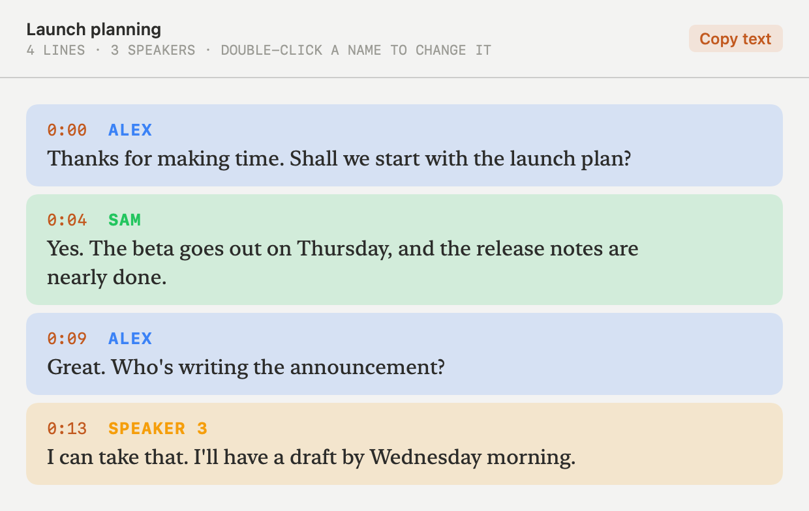

Record both sides.
Tick Screen, Audio and Camera in any combination, press one button, and Intercept records them into a single file you can open anywhere. Turn on Transcribe and you also get a transcript that knows who said what.
Download for macOS
Screen
Your display at full resolution, or every display side by side.
HEVC · native resolution · 30 fpsAudio
The microphone you pick and everything your Mac plays, mixed into one track.
AAC · 48 kHz stereoCamera
Built-in, external or your iPhone. In a corner of the screen recording, or full frame on its own.
picture-in-picture or full frameAnything with Screen or Camera saves an .mp4; Audio alone saves an .m4a.
Who said what
When a recording stops, Intercept sends its sound to ElevenLabs and saves a transcript beside the file, split into turns by speaker.
Double-click Speaker 2 to give them a real name. It changes every line they spoke. Transcribe older recordings from the list, and copy any transcript as text.

Both sides of every call
Your voice and the other person's are mixed into one track, so any player hears the whole conversation.
Keeps going when you lock
Lock your Mac or let the display turn off: sound keeps recording, and the video picks up again in the same file when you're back.
Pick your devices
Choose the microphone (or none), whether to record the Mac's own sound, and which camera. Intercept only asks for the permissions those need.
Crash-safe
Intercept saves every 10 seconds. If the Mac crashes or loses power, it finishes the recording next time it opens.
Name things as you go
Double-click a recording to rename it. Its transcript is renamed with it.
Plain files, in your folder
Recordings go to ~/Documents/Intercept, or a folder you pick, and open in QuickTime, VLC or any editor. Press ⇧⌘R to start and stop.
Your recordings stay on your Mac
Intercept has no accounts, no analytics and no servers of its own. Recordings are ordinary files on your disk. The only thing that ever leaves your Mac is a recording's sound, sent to ElevenLabs, and only when you turn on Transcribe, using your own ElevenLabs API key.
- Download the .dmg and drag Intercept to Applications.
- Open it, tick what you want to record, and grant the permissions the window lists. After allowing Screen Recording, press Relaunch.
- For transcripts, tick Transcribe and add your ElevenLabs API key with Add key….
- Press the record button, or ⇧⌘R. Press it again to stop.
Requires macOS 26 (Tahoe) or later on Apple Silicon. Signed with a Developer ID and notarized by Apple, so it opens without warnings. Please follow the law where you live and tell people when you record them.